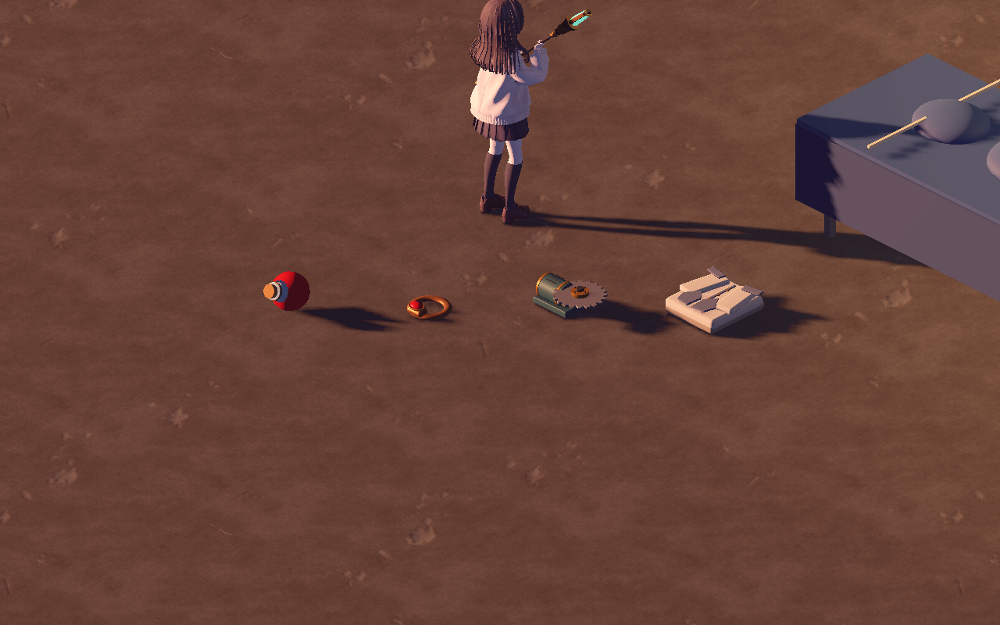
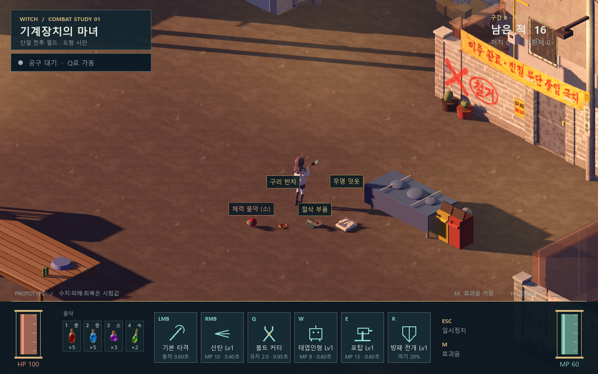

필드 드롭 모델 · 네 종류 시범
소형 체력 물약 · 구리 반지 · 절삭 부품 · 접힌 무명 겉옷을 실제 필드에 연결했습니다.
모델 모양 확인 · 2.7배 확대
왼쪽부터 물약, 반지, 절삭 부품, 접힌 옷입니다. 실제 골목 조명과 그림자를 사용했습니다.

기본 게임 시점 · 낙하와 선택
기본 카메라 배율의 1280×800 캡처입니다. 버튼으로 떨어지는 모습과 숨김·강조 상태를 비교할 수 있습니다.

모델·원본·재현 방법 · 검증 기록
네 종류만 적용했으며 2026-11-02 사용자가 현재 외형을 프로토타입용으로 선택했습니다. Blender 저장본/재임포트 24항목, GPU 런타임 60항목, 기존 전리품·자원·아이템 142항목 통과. 리뷰에서는 적을 화면 밖으로 옮겼습니다.